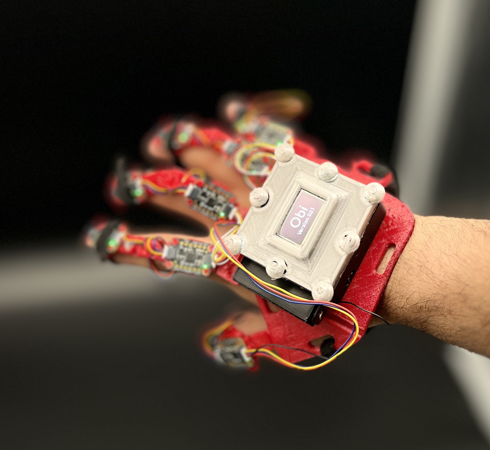
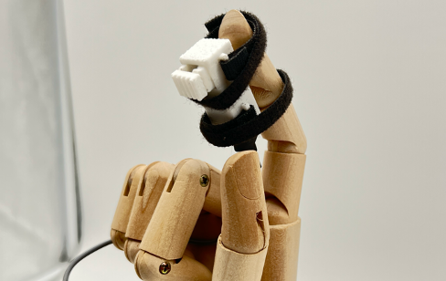
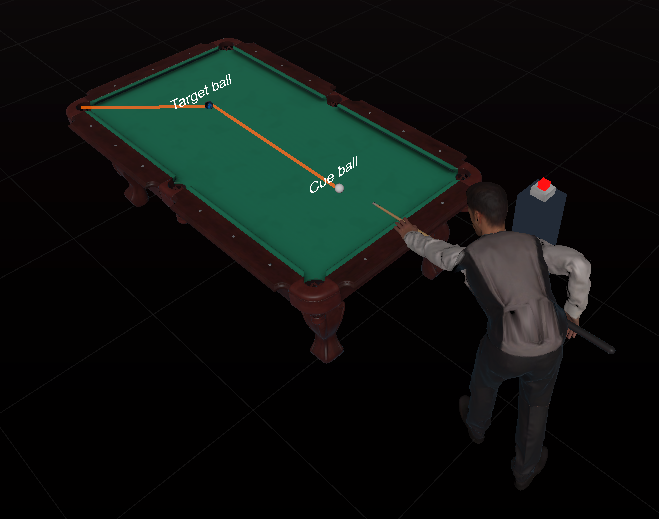
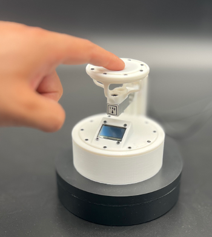
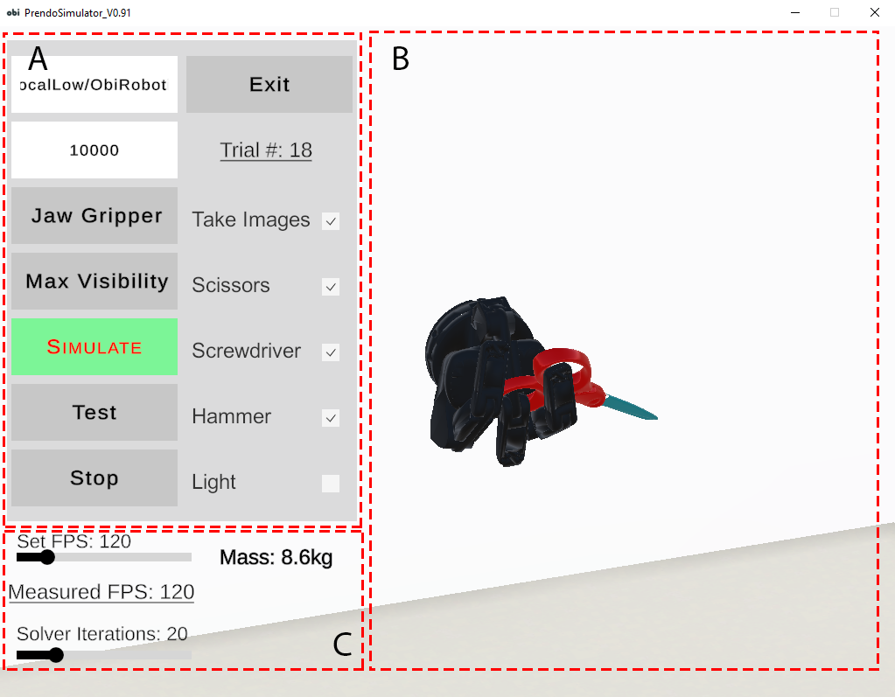

Research Fellow
University of Birmingham
Leading experiments in sensorimotor neuroscience — using EEG, psychophysics and motion capture to reveal how the brain encodes, predicts and recalibrates natural hand actions.
I'm Diar Abdlkarim — a sensorimotor neuroscientist and technologist studying the neural control of natural action through EEG, the science of touch, and motion capture, then turning it into immersive tools people can use.
A young academic-entrepreneur working at the seam between neuroscience and technology.
My research asks a deceptively simple question: how does the brain command the body to act in the real world? To answer it I combine EEG to read the neural signatures of movement, psychophysics of touch to probe how we sense contact and force, and motion capture to measure action with millimetre precision — closing the perception–action loop in extended reality.
Beyond the lab, I build. As Co-Founder & Director of Motion Dynamics I translate that science into hand-tracking hardware, haptic devices, and XR software — and I teach the next generation of scientists to do the same through hands-on courses in VR, motion capture and rapid prototyping.
Understanding the neural control of movement and touch — and putting that understanding to work.
Leading experiments in sensorimotor neuroscience — using EEG, psychophysics and motion capture to reveal how the brain encodes, predicts and recalibrates natural hand actions.
Building the instruments the science demands — advanced hand-tracking gloves, fingertip haptics and XR pipelines — and taking them from prototype to market through ICURe and company formation.
Teaching researchers to build and test immersive experiments — VR in Unity, motion capture, 3D printing — and bringing XR and neuroscience into classrooms and community outreach.
Four intertwined threads that run from the brain to the fingertip and back.
Reading the neural signatures of movement to understand how motor plans are formed, predicted and corrected while people act in naturalistic, real-world tasks.
Sensory-motor neuroscience of the sense of touch — how the hand senses contact, force and texture, and how tactile feedback shapes what we do next.
Capturing fine-grained sensorimotor signals with hand- and finger-tracking hardware and optical mocap, measuring action with the precision that experiments demand.
Building XR, HCI and human–robot interaction systems that close the perception–action loop in real time — for research, rehabilitation and collaboration.
Hardware, software and studies that turn sensorimotor science into things people can touch.

A modular glove tracking every finger at high rate, with integrated haptics for precise XR and robotics control.

Renders physical button-press sensations with controllable indentation.

A VR billiards task coupled to a wrist squeeze band for impact-synchronised feedback.

A grounded lab system delivering precise vibrotactile stimuli while measuring fingertip force.

A simulation pipeline that generates realistic robot grasps, linking game engines and robots in real time.
Peer-reviewed work across HCI, sensorimotor neuroscience and XR.
Grants, awards and translation funding across research and enterprise.
XR Text Trove review of text input techniques.
Named postdoc delivering XR music system integration & studies.
Gift to explore ten-finger text entry for VR/AR.
Innovate UK market validation for the AR musician system.
Advanced toward company formation & scale-up.
Portable tactile neuropathy assessment proof-of-concept.
Immersive biofeedback for upper-limb rehabilitation.
Collaborations, speaking, consulting on immersive tech and neurotech, or just a good conversation about how the brain moves the body — I'd love to hear from you.